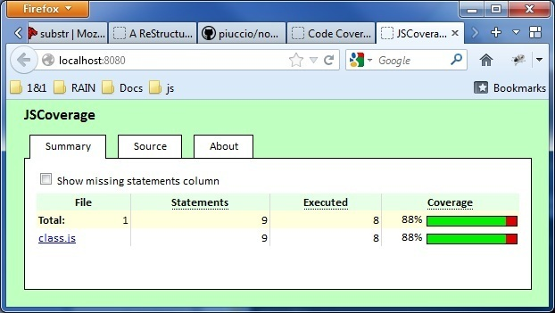

Code Coverage¶
Motivation, Criterias & Overview¶
Code coverage is an important metric for software testing quality. RAIN needs a good tool for this purpose to give feedback for the unit testing process both internally (i.e. to developers) and externally (i.e. to stakeholders, interested 3rd parties).
The major available code coverage tools for JavaScript have been analyzed and the one that met most of the criteria outlined below was chosen for a sample scenario. The criteria taken into consideration for choosing a valuable code coverage tool for RAIN were, in descending order of importance:
- Working, mature solution
- Server and client side support
- Easy integration with RAIN tool chain
- Documentation available
- Graphical reporting interface available
Since JSCoverage (http://siliconforks.com/jscoverage) is the only tool that was found that is able to also run on the client side, it was all down to whether it fit most of the important criteria above.
JSCoverage¶
Running JSCoverage can be divided into several steps:
- Code instrumentation: source code is modified to add coverage reporting ability, leaving the functionality intact
- Test runner is made aware to use the new instrumented sources (at require() level, or at test configuration level)
- Tests are run, generating a code coverage report
- A report web page is accessed that displays in a graphical manner the results
Only instrumentation is taken care of and a reporting template provided.
Running it inside node with jasmine requires some additional modules:
- JSCoverage for node (node-jscoverage)
- Jasmine reporter for JSCoverage (jscoverage-reporter)
Usage¶
There are several steps that need to be taken care of before getting JSCoverage to run with the RAIN tool chain:
A new tool chain command must be added to instrument the code, for every source folder, e.g.:
jscoverage lib lib-covTests must have the ability to load modules from a source folder that has undergone instrumentation (e.g. through a environment variable, or modified require() function)
The test runner must be modified to use the JSCoverage Reporter that aggregates code coverage data, e.g.:
var path = require('path'); require('jasmine-node'); require('jscoverage-reporter'); jasmine.getEnv().addReporter(new jasmine.JSCoverageReporter( './test/server/reports')); require(path.join('jasmine-node', 'lib', 'jasmine-node', 'cli.js'));A simple webserver must be used to serve the page that displays the code coverage report (one is included with jscoverage-reporter)
Here is a sample output showing the file statistics and source code statistics:
Code coverage sample summary page

Code coverage sample source code statistics page
{kind=link}